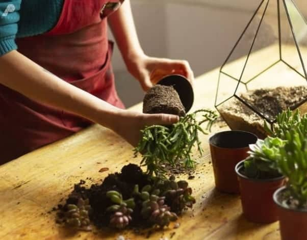
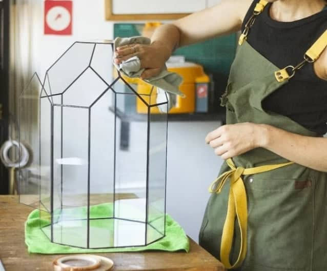

Somos Pame y Juan Pedro, compañeros de vida, amantes del arte, el diseño y la naturaleza.
PIUKE nace de las ganas de fusionar todas nuestras pasiones. Siendo eternos aprendices, siempre incursionamos en muchas disciplinas como pintura, escultura, cerámica y fotografía.
La llegada del vidrio a nuestras vidas como material de trabajo fue casi inesperada. De forma autodidacta, persistente y con muuuucha prueba y error aprendimos esta hermosa técnica que nos permitió plasmar en objetos todas nuestras ideas y por si fuera poco también nos brinda la posibilidad de albergar y contemplar vida en ellos.
PIUKE significa CORAZÓN en lengua mapuche y creemos que resume el amor y dedicación que empleamos en hacer de cada terrario y pieza de coracion un objeto único donde las energías nacen, crecen y se renuevan.
Cada pieza la realizamos a través de un proceso íntegramente artesanal utilizando la técnica Tiffany. Usamos vidrio float y espejos de 2,2 mm. recubiertos en cobre y soldados en estaño. Como acabado empleamos patina negra y así obtenemos un objeto de diseño super elegante y resistente.
PIUKE es crear y materializar cada día nuestros sueños.
Gracias por confiar en nosotros, apoyar el trabajo autogestivo y el diseño Argentino!

